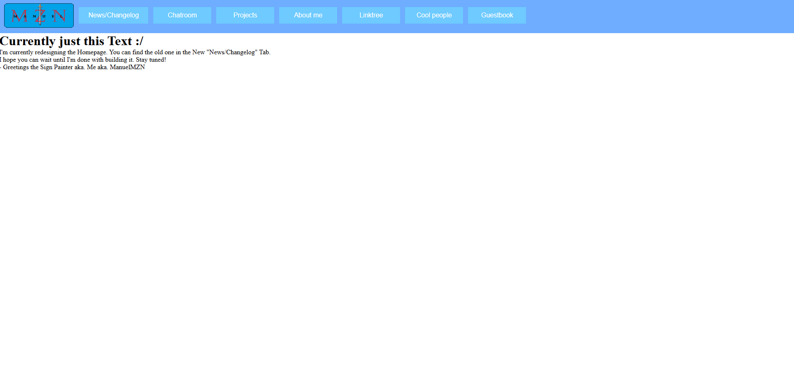

Hello! I redesigned the Homepage of My Website.
You may Already noiced the 2 new buttons at the Top of my site (News/Changelog & Chatroom). Which I implemented in the last update.
The Chatroom was completly new but the News/Changelog was just the old Homepage. So why did I add it?
Well, When I Imp0lemented the Chat feature I thought no one will use it if it's just there. It had to be one of the first things you see hen you open my site.
But I needed to somehow get this feed-ish thingy as well as the chat on the Homepage.
So the feed-ish thingy is now News/Changelog (In the Style it was before too) or In smaller on thr new Homepage.
If you've been to the version of this site that was online in the time while I did the redesign you may be familiar with this screen:

That was a placeholder that waas there because I wanted to publish the Chat feature but the New Homepage wasn't ready at that point.
I hope you got the "World of Goo-Joke" at the End of the Placeholder.
Nevermind - The Homepage Still isn't finished but ready to be released. I hope you stay tuned for the final result.
So, Goodbye - ManuelMZN
PS: In case you read this inside the tiny Window on the New Homepage - That's still a bug and not How it was supposed to be.
I hope reading this in such a tiny space didn't feel too bad...